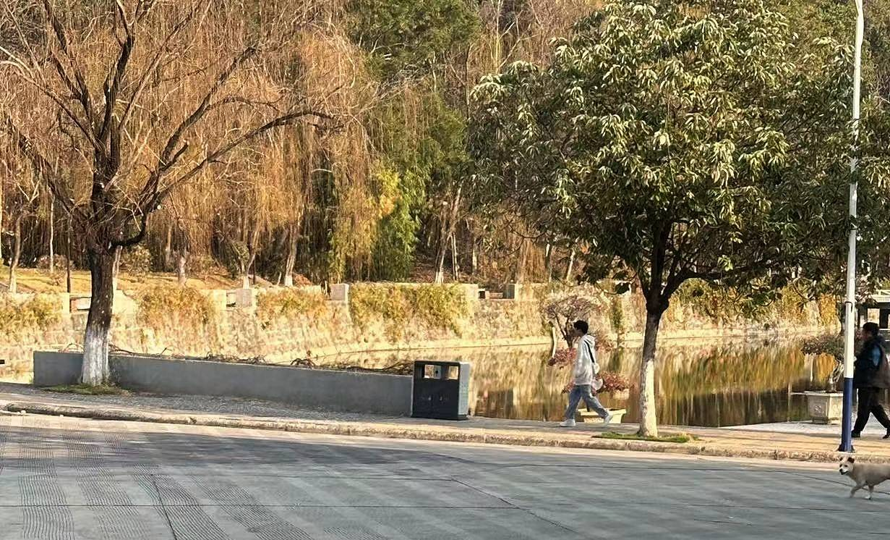

这是一条通往攀枝花公园的小路，蜿蜒而上，宛如一条通往仙境的秘径
步入后山，脚下的土路铺满了柔软的枯叶，微微弯曲的枝桠从两旁低垂而下，像是自然之手轻轻织就的绿色廊道。微风轻拂，树叶发出沙沙的声音，仿佛是大自然为我奏响的一曲安宁之歌
沿着这条小路，一股清新的花香扑面而来，伴随着微风的轻拂，我仿佛置身于花海之中
山间花草争相绽放，彩蝶翩翩起舞。绚丽多彩的花朵点缀着整个山腰，散发着浓郁的芬芳。我静静驻足，深吸一口花香，感受到生命的脉动与自然的和谐
CAMPUS SCENERY EXHIBITION.
在秋日的柔和阳光下，一片红叶如火焰般翩然飘落。它们像优雅的舞者，在微风中轻盈地舞动，落地时带来一阵轻柔的声音。红叶的色彩如此鲜艳，仿佛点亮了整个大地，将秋日的温暖和丰收的喜悦传递给每一个细心观赏的人
红叶的飘零是一种优雅的离别，它们轻盈地舞动着，落在大地上，为大地披上了一层华美的红色地毯。它们不畏风霜，不畏孤寂，以一种奇妙而坚韧的姿态，告别生命的繁华，迎接新的挑战。
红叶的美丽并非短暂的瞬间，它们承载着生命的哲理和智慧。红叶的飞舞是对生命的肯定，是对变化的接纳。它们告诉我们，即使在告别的时刻，也要以美丽和坚强的姿态面对生活，追逐内心的渴望。
红叶带给人们的不仅仅是视觉上的享受，更是心灵的启迪。它们用自己的存在，教会我们欣赏瞬息即逝的美好，学会接受不可逆转的变化。红叶是生命的映照，是人类智慧的结晶。
当我们凝视着这些红叶时，心灵也随之陶醉，融入了大自然的和谐与美感。这场秋天的盛宴，让人感受到了一种脱俗的优雅，仿佛进入了一个超凡的世界，远离尘嚣，只专注于红叶舞动的美妙瞬间。
在红叶的世界里，我们感受到时间的流转，感受到生命的脆弱与坚韧。红叶让我们明白，生命的旅程并非一帆风顺，但只有在接受变化、拥抱变化的同时，才能在生命的征途中找到真正的美与希望。
清早，当晨曦初现，静明湖畔的宁静仿佛是时间凝固的瞬间。微风轻拂湖面，涟漪荡漾，似是湖水在细语，述说着昨夜的秘密。
在这个宁静的时刻，自律的身影便悄然闪现。一位青春洋溢的男生行走在在湖畔，他的背影透着自信与决心。他举步稳健，姿态优雅，仿佛是湖水与清晨的和谐交融。
这个身影并非浮光掠影，而是内心的坚守和追求的体现。他不为外界的喧嚣所扰，宁愿选择在这片宁谧之地展开自己的内心对话。他用行动诠释着自律的真谛，追求着心灵的清明与高尚。清早的静明湖畔，自律的身影宛如一颗闪耀的明星，照亮着周围的一切。他的存在不仅为这片湖畔增添了一份诗意，更让人们感受到自律的力量与美好。他是自律的化身，也是我们心中永恒的追求。